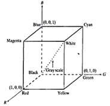
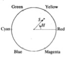

The different types of color models are:
RGB:
- The RGB color model is an additive color model in which red, green and blue light are added together in various ways to reproduce a broad array of colors.
The name of the model comes from the initials of the three additive primary colors red, green, and blue.
- The main purpose of the RGB color model is for the sensing, representation, and display of images in electronic systems, such as televisions and computers, though it has also been used in conventional photography. Before the electronic age,
the RGB color model already had a solid theory behind it, based in human perception of colors.
- This model is based on the Cartesian co-ordinate system. The RGB model is shown in figure.

- In the above figure, the three primary colours, that is Red, Green and Blue are shown at the three corners of the cube. The secondary colors cyan, magenta and yellow are shown at the other three corners of the cube.
- Black is at the origin and white is at the corner furthest from the origin. In the RGB model, the gray scale (points of equal RGB values) extends from black to white along the line joining these two points.
- The different colors in this model are points on or inside the cube, and are defined by vectors extending from the origin. For convenience all color values have been normalized so the cube shown in the figure above is a unit cube.
- All the values of R,G and B are assumed to be in the range [0,1]
HSI:
- HSI color model I stands for intensity the average of R, G and B components. I specifies the brightness irrespective of the color .H stands for Hue it is an attribute that describes pure color .
S stands for saturation, this gives the degree to which pure color is diluted by white color.
- The HSI color model decouples the intensity component from Hue and Saturation which are color carrying components.
As a result, the HSI model is an ideal tool for developing image processing algorithm.

- Shown above is the HSI model. The angle from the red axis gives the Hue, the length of the vector is the saturation and the intensity is given by the position of the plane on the vertical intensity axis.
YUV:
- The YUV model defines a color space in terms of one luma (Y) and two chrominance (UV) components. The YUV color model is used in the PAL and SECAMcomposite color video standards. Previous black-and-white systems used only luma (Y) information. Color information (U and V) was added separately via a sub-carrier so that a black-and-white receiver would still be able to receive and display a color picture transmission in the receiver's native black-and-white format.
Y stands for the luma component (the brightness) and U and V are the chrominance (color) components.